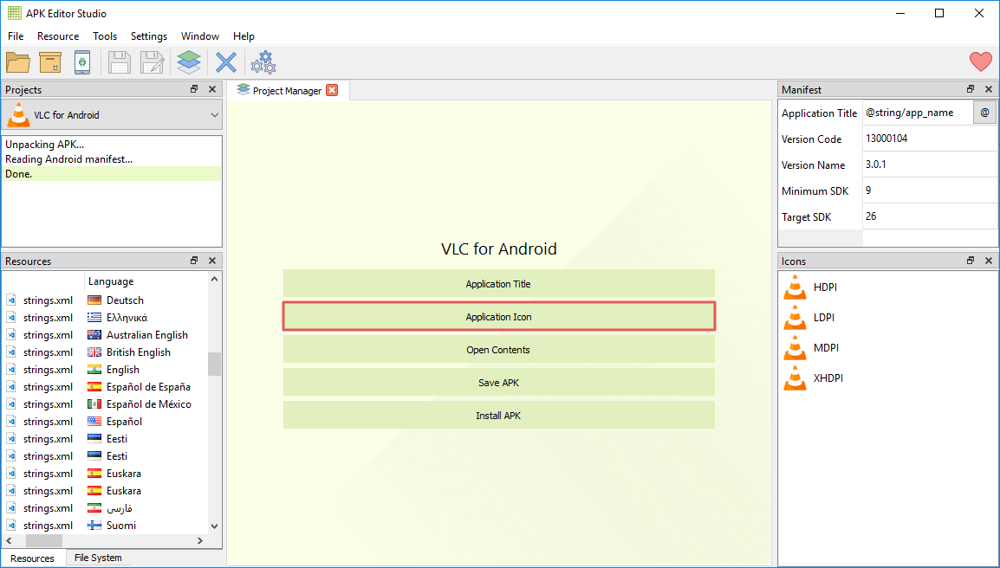
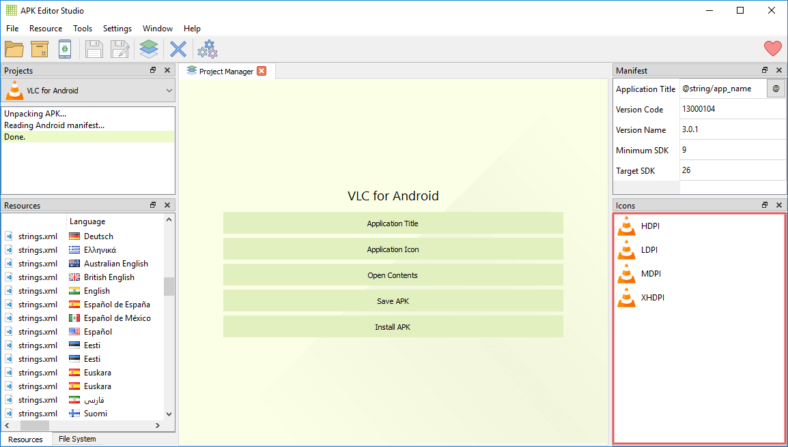
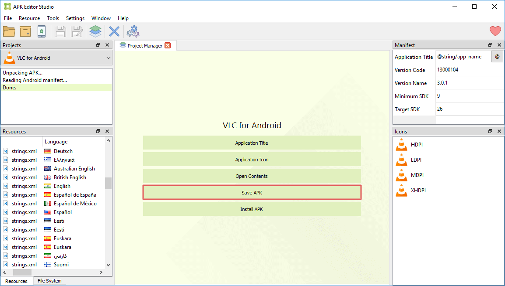

How to change Android app icon
Easy way to replace Android application icon in 3 simple steps using APK Editor Studio
November 13, 2019
This guide will show you how to quickly replace Android application icon with your own image. This becomes incredibly simple with APK Editor Studio and doesn't require any specific technical skills.
TL;DR
- Download APK Editor Studio.
- Open APK in APK Editor Studio.
- Click "Application Icon" and select the new icon.
- Click "Save APK".
- Done!
Detailed Guide
Step 1
First of all, download APK Editor Studio. It is totally free and available for all major platforms – Windows, macOS and Linux. Install it and open the needed APK.
Step 2
Click the Application Icon button and select the needed image for a new icon.

This will automatically replace all application icons. If you would like to provide different icons for specific screen sizes, right-click on the required item under the "Icons" list and select the Replace Resource action or simply drag and drop the image file.

APK Editor Studio supports numerous formats (such as PNG, SVG, JPEG, BMP, ICO, GIF) and automatically converts images if necessary.
Step 3
Click Save APK and wait for the packing to finish.

Done! Now you have an automatically signed APK with a new icon.
Moreover, you can immediately install the APK on your Android system, just connect your device and click Install APK.
Conclusion
Pretty simple, isn't it? APK Editor Studio makes it easy to make minor changes to Android applications without any specific technical knowledge as well as create major APK mods of any sort. Try it for yourself.
This guide is also available in the following languages: